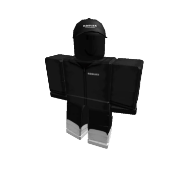

2020. Разработчик "Талларико(Англ: Tallarico)" вступил в судебную тяжбу с владельцами Роблокса за права на звук смерти "Oof". Плейс Piggy достигает 2 миллиарда визитов за короткое время. Adopt Me достиг 2 миллиона одновременно играющих игроков, что привело к проблемам на сайте. 24 апреля происходит "Волна Банов", которая забанила множество аккаунтов, которые хоть раз использовали Эксплойты. Масштабное обновление интерфейса во время игры. 16 июля Roblox на всех своих сайтах запрашивает файлы cookie. В январе - феврале 2020 года, отметка одновременного онлайна превысила 20 - 30 миллионов! Adopt Me достиг +10.7B визитов и став первым плейсом, который получил такое кол-во визитов. Убрали временно старую Капчу и сделали другую, которая более сложнее. В декабре были боты которые писали о бесплатных робуксах, даже через систему. Появилось множество приватных эксплоитов, которые позволяли отрезать игрокам части тела. Ходят слухи, что плейс Adopt Me скоро забанят из-за многочисленных ботов.
2023 с 3 мая Roblox начал использовать новый античит Hyperion, который закрыл доступ к игре компьютерам с 32-битными процессорами и пользователям GNU/Linux. Примечания Дэвид Басзуки (14 декабря, 2011 год): "A Brief History of Physics in Video Games" Информация о домене goblocks.com с сайта Whois Информация о домене dynablocks.com с сайта whois.com Информация о домене roblox.com с сайта Whois Информация о торговой марке Roblox с сайта Trademarkia Информация о бизнесе Roblox с сайта Better Business Bureau Самые первые посты на форуме, найденные сервисом Wayback Machine Запись в блоге сообщества искателей старых клиентов Роблокса Профиль Эрика Кэссела, найденный сервисом Wayback Machine Информация о денежном взносе в компанию Roblox, записанная сервисом Crunchbase Страница со всеми пользователями Роблокса, найденная сервисом Wayback Machine Информация о патенте на Роблокс, найденный сервисом Google Модель, созданная пользователем Toolbox Страница входа с объявлением, найденная сервисом Wayback Machine Дэвид Басзуки (1 июля, 2004 год): "Saved Solutions?" (страница найдена сервисом Wayback Machine) Roblox (12 января, 2020 год): "In response to the ‘oof’ sound discussion" Страница о Роблоксе из личного блога Майка Рейхока
Информация Всем привет, меня зовут Миша, мне 15 лет. Я проживаю в России, в городе Санкт-Петербург. И я бы хотел поведать вам историю, случившаяся со мной. Dead Player0976-Это хакер с тёмной одеждой и чёрной кожой. Впервые зафиксирован в 2017 году. Его часто видели в Natural Disaster Survival. На данный момент он перебрался на такие режимы как: Brookhaven, Jailbreak, Adopt Me и Bloxburg(Информацию нашёл в интернете). Способности: Ломать карты, манипулировать игроками, взламывать игроков и удалять их аккаунты, управлять игровыми персонажами. Ходят легенды, что Dead Player0976 был 13 летним мальчиком, но над ним часто издевались за то что он был отличником. Но вдруг ему написал странный пользователь под ником: Dead Player0001 и тот уговорил мальчика отомстить тем, кто над ним издевался. Вечером он увидел своих главных обидчиков и... тех ребят больше никто не видел... История Player Скин этого игрока Было где-то час дня, на дворе стоял март 2021 года. Я предложил своим друзьям поиграть в Jailbreak. Я создал приватный сервер и начал ждать своих друзей. Я подождал 20 минут, но никого не было. Тогда я написал своим друзьям об этом, но они сказали что не могут присоединиться к серверу. Это было странно. Вдруг небо стало красным. Все постройки с карты исчезли. Неожиданно день и ночь на карте начали заменять друг друга буквально за секунду. Я захотел выйти, но кнопки Leave попросту не было. Тут моего персонажа телепортировало в непонятное помещение. Я огляделся, всё было спокойно. Тут я увидел какого-то игрока. Здесь у нас начался диалог. MisterMishka(Я): Привет, ты кто? Dead Player0976(Ник этого игрока): Привет, я Dead Player0976. Добро пожаловать в мой бункер. MisterMishka: Понятно, а я Миша. Тут я ему рассказал историю, которая произошла со мной, на что он ответил. Dead Player0976: Странно, может быть я смогу тебе помочь? MisterMishka: Чем? Неожиданно меня выкинуло из режима. Самое интересное что он появился у меня в друзьях. Тогда я позвонил своим друзьям, но они мне не поверили. Тогда я им предложил пойти вместе, чтобы доказать им это. Я создал приватный сервер и пригласил своих друзей. Прошло 20 минут, но ничего не произошло. Друзья посмеялись и собирались уходить. Неожиданно под персонажами моих друзей пропал пол и они упали в пустоту. Я испугался, тут передо мной появился Dead Player0976. Он сказал, что узнал про то, что его обижают 2 хулигана почти каждый день и предложил им отомстить. Я отказался, но в итоге он уговорил меня. Тогда он научил меня пару запретным приёмам и я решил завтра действовать... На следующий день Я пришёл в школу и наткнулся на тех хулиганов. Они сразу ко мне пристали и начали просить деньги. Тогда я вырубил их запрещенным приёмами и побежал на урок. К счастью, никто не заметил нашей сегодняшней бойни. После школы я захотел пойти поиграть в Роблокс, но у меня вылетел аккаунт. Я подумал, что у меня вылетел акк. Я ввёл свой ник и пароль, но они не сработали. Позже оказалось, что меня взломали и удалили мой акк. Я создал новый и спустя пару часов увидел того игрока. Я подошел к нему, но вдруг я не смог писать в чат и двигаться. Он написал следующее. Dead Player0976: Я сломал карту в Jailbreak, именно я взломал и удалил твой аккаунт. И да, совсем скоро произойдёт такое событие в Роблоксе, что ты не сможешь спать ночами) Тут я вылетел из игры. К счастью я его больше не встречал. Но оказалось, что это всё было только началом...
вот его фото хакера Dead Player0976